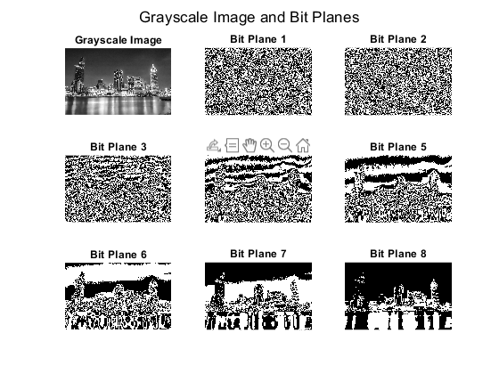

clc;
clear;
close all;
[filename, pathname] = uigetfile({'*.*', 'All Files (*.*)'}, 'Select an Image');
if isequal(filename, 0)
disp('User cancelled the image selection.');
return;
end
filePath = fullfile(pathname, filename);
image = imread(filePath);
if size(image, 3) == 3
grayImage = rgb2gray(image);
else
grayImage = image;
end
figure;
subplot(3, 3, 1);
imshow(grayImage);
title('Grayscale Image');
for k = 1:8
bitPlane = bitget(grayImage, k);
subplot(3, 3, k + 1);
imshow(bitPlane, []);
title(['Bit Plane ', num2str(k)]);
end
sgtitle('Grayscale Image and Bit Planes');
